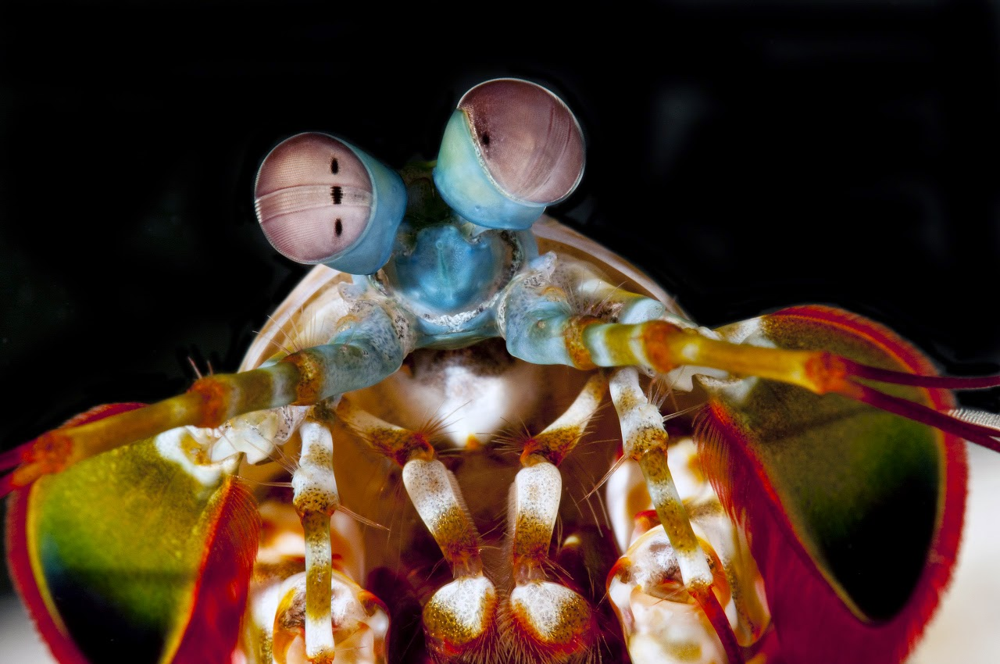

Fatos sobre o Stomatopoda
Bonitos e mortais!
Conhecido como Stomatopoda, ou mais popularmente "Tamarutacas" no Brasil, os Odontodactylus scyllarus, são ao mesmo tempo um dos seres mais coloridos e mais fortes do reino animal.
Eles habitam as costas dos mares tropicais e subtropicais, e são exclusivamente carnívoros tendo em seu cardápio de opções alimentares camarões, caranguejos, moluscos, peixes, e até mesmo outros da mesma espécie , ou seja, também são canibais 😱.

Classificação ciêntifica
| Reino | Animalia |
|---|---|
| Filo | Arthropoda |
| Subfilo | Crustacea |
| Classe | Malacostraca |
| Subclasse | Hoplocarida |
| Ordem | Stomatopoda |

O punho mais rápido do oeste,... ops, dos mares!
Sim, a velocidade do soco dessa lagosta boxeadora - mais um apelido carinhoso - pode chegar a 80 km/h e, sim, pode gerar força suficiente para quebrar o vidro de um aquário o que mais ou menos explica porque você nunca viu um deles antes. 🤔
E porque esses olhos tão grandes? ... É pra te ver melhor!
Bem, então vamos fazer uma comparação: Nós seres humanos temos a capacidade de enxergar 3 cores primárias (vermelho, verde e azul) e isso define todo o espectro de cores que vemos, ou seja, todos os tons (combinações entre as cores primárias) que nosso cérebro é capaz de processar.
O Stomatopoda enxerga 12 cores primárias. E como se isso não fosse suficiente, além dos fotorreceptores de cores, eles ainda possuem outros 4 fotorreceptores que filtram a luz, e permitem que eles percebam as imagens de forma multespectral.
Resumo da ópera: enquanto nós seres humanos somos capazes de enxergar 1 milhão (1.000.000) de cores, ou no máximo 1 bilhão (1.000.000.000) como nos casos raríssimos de Tetracromatismo, o Stomatopoda é capaz de enxergar 1 septilhão (1.000.000.000.000.000.000.000.000) de cores.
Alguém mais aí querendo se candidatar a uma transfusão de fotorreceptores? 👀
Referencias bibliográficas
- Wikipedia - Stomatopoda
- The oatmeal - Why the Mantis Shrimps is my new favorite animal
- Blog Projeto Biomar
- Terra.com - Os mais potentes socos e chutes da natureza
- Biodiversity4all - Tamarutacas
- Amino Apps - Stomatopoda
- Blog O Naturalista - Stomatopoda
- Revista Galileu - Conheça a mulher que enxerga 100 vezes mais cores do que uma pessoa normal